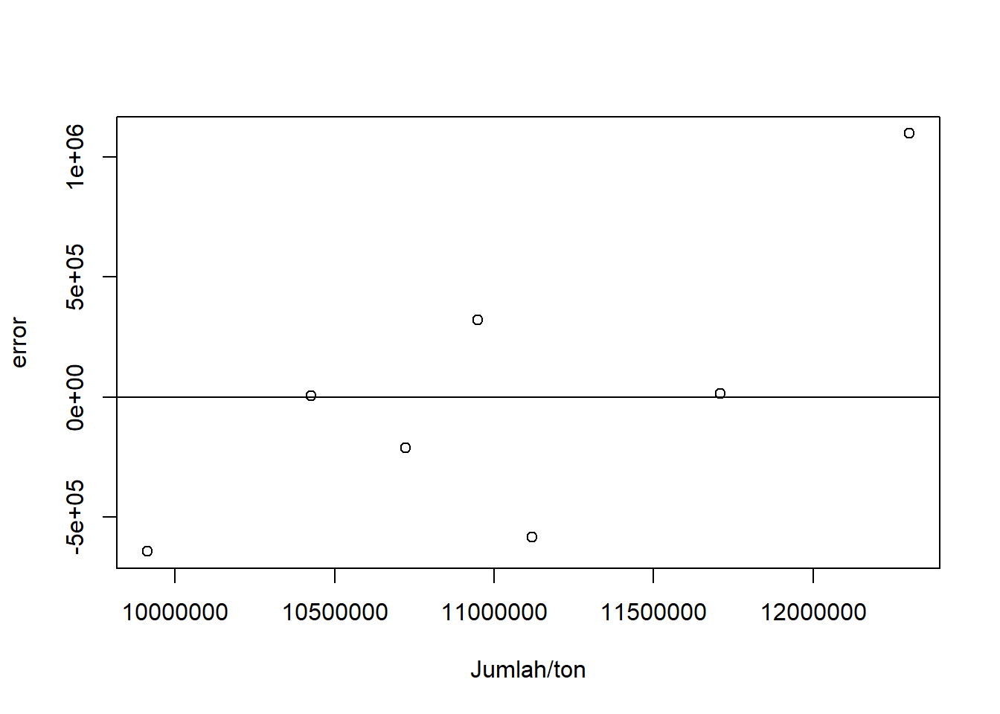
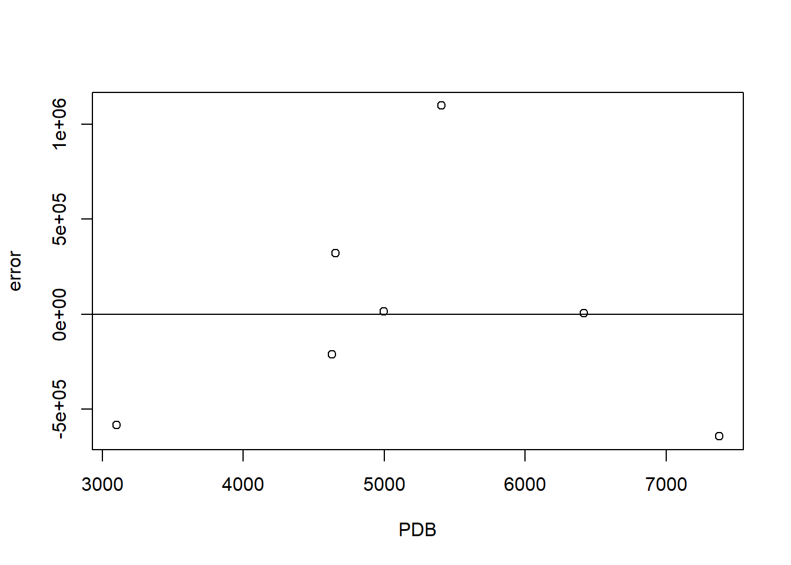

library(readxl)
library(tidyverse)
dat <- read_excel("data metopel.xlsx")Pengaruh Ekspor CPO ke India Sebagai Pasar Utama terhadap PDB Indonesia
Metode Penelitian Politeknik APP Jakarta

1 Pendahuluan
1.1 Latar belakang
Minyak Sawit atau Crude Palm Oil (CPO) merupakan salah satu komoditas ekspor terbesar di Indonesia. CPO memiliki peran yang sangat penting terhadap distribusi perekonomian negara. Perdagangan Internasional sendiri merupakan salah satu kegiatan yang membantu berjalannnya sebuah kegiatan ekspor maupun impor. Indonesia sendiri telah melakukan kegiatan tersebut hingga bergabung dengan berbagai organisasi perdagangan dunia. Banyak sekali tantangan yang harus dihadapi dalam melakukan perdagangan internasional. Seperti regulasi, konflik atau kondisi negara tersebut hingga pertumbuhan ekonomi yang mempengaruhi mata uang yang digunakan.
Salah satu komoditas andalan ekspor Indonesia yaitu CPO yang berperan penting bagi negara. Penerimaan devisa negara dari CPO mencapai 80% pertahun dari total nilai ekspor komoditas pertanian yang menjadi andalan di Indonesia seperti CPO, kopi, teh, tuna, serta kakao (Prasetyo dkk., 2018). Perkembangan dunia yang cepat ini yang menyebabkan peningkatan kebutuhan barang dan jasa. Hal tersebut mendorong terjadinya transaksi internasional yang dapat terjadi apabila suatu negara memiliki surplus produksi dalam negeri dan kemudian mengekspor produk tersebut ke negara lain. Perdagangan internasional ini berpengaruh terhadap pertumbuhan produk domestik bruto (PDB) suatu negara.
1.2 Ruang lingkup
Berdasarkan data ekspor yang didapatkan dari Badan Pusat Statistik India merupakan negara tujuan Ekspor terbesar di Indonesia, disusul Tiongkok dan Pakistan setelahnya. Dalam penelitian ini penulis menggunakan data yang bersifat time series yaitu tahun 2017-2023. Pertumbuhan ekonomi yang sebagaimana diukur oleh GDP, selalu menjadi indikator makroekonomi yang populer dan merupakan hal yang sangat penting bagi pembuatan kebijakan (Ge dan Tang, 2020). Teori ekonomi makro juga menyebutkan bahwa hubungan antara ekspor dengan pendapatan nasional merupakan suatu persamaan identitas karena ekspor merupakan bagian dari pendapatan (santoso, 2021)
1.3 Rumusan masalah
- Apakah Ekspor CPO di Pasar Utama memiliki pengaruh terhadap PDB Indonesia?
- Bagaimana jika Indonesia tidak melakukan ekspor CPO ke India?
1.4 Tujuan dan manfaat penelitian
Bagian ini merupakan jawaban yang akan dicapai dari pembahasan laporan, biasanya dirumuskan dari poin-poin masalah yang telah dijabarkan sebelumnya. Identifikasi siapa saja stakeholders yang dapat memanfaatkan penelitian ini.
1.5 Package
Packages yang digunakan antara lain sebagai berikut:
2 Studi pustaka
• Perdagangan Internasional
Perdagangan internasional sendiri merupakan kegiatan jual beli yang dilakukan dalam kancah dunia atau perdagangan antar negara. Perdagangan Internasional adalah kegiatan memperdagangkan barang dan jasa yang dilakukan oleh penduduk suatu negara dengan penduduk negara lain. Perdagangan Internasional tidak hanya mencakup ekpor impor barang tetapi juga jasa. Pedagangan internasional diciptakan agar memudahkan suatu negara untuk memenuhi kebutuhan yang tidak ada atau kurang di negara nya. Selain itu, perdagangan internasional diharapkan dapat menjalin hubungan erat antar negara saat bekerja sama. Manfaat lainnya yaitu menaikan pendapatan negara, investasi hingga lapangan pekerjaan. Perdagangan internasional cukup memiliki dampak yang luas bagi perekonomian suatu negara.
• CPO
Minyak sawit atau CPO termasuk kedalam salah satu minyak yang berkontribusi besar di dunia. CPO memiliki banyak manfaat dibidang Kesehatan, pangan hingga bahan baku. Indonesia sendiri merupakan negara penghasil CPO terbesar di dunia, diikuti Malaysia dan Thailand setelahnya. Hal ini disebabkan oleh luasnya perkebunan sawit di Indonesia yang mencapai 14,68 juta hektar pada tahun 2019 dan dapat menghasilkan 43 juta ton pertahun. India sendiri merupakan pengimpor CPO terbesar di dunia pada tahun 2020 dengan presentase 42% atau senilai dengan US$ 4,9 Miliar menurut ITC. Indonesia menjadi salah satu negara pengekspor CPO ke India dan berdasarkan data dari badan pusat statistik, India menjadi urutan pertama sebagai negara yang mengimpor paling banyak di Indonesia.
• Ekspor
Ekspor dan Impor merupakan bagian dari perdagangan internasional. Ekspor sendiri memiliki banyak pengertian. Salah satunya adalah mengeluarkan barang atau jasa dari daerah pabean ke luar daerah pabean, dalam artian tersebut menjual barang ke luar negeri bukan saja arti dari ekspor. Tetapi mengirim barang entah diperjual belikan atau tidak, tetap disebut ekspor. Kegiatan tersebut tentu sangat berpengaruh terhadap pendapatan negara atau PDB. Apabila ekspor mengalami peningkatan maka produksi barang dan jasa juga mengalami peningkatan karena adanya permintaan. Begitu juga sebaliknya, jika ekspor mengalami penurunan karena permintaan barang dan jasa dapat menyebabkan angka impor yang lebih besar dibanding ekspor dan hal tersebut dapat menurunkan pertumbuhan ekonomi.
3 Metode penelitian
3.1 Data
Berikut adalah data yang digunakan sebagai objek penelitian yaitu Jumlah/Ton, nilai FOB dan PDB Indonesia:
| tahun | India/ton (X) | Nilai FOB (S) | PDB(Y) |
|---|---|---|---|
| 2017 | 7376.8 | 4967.1 | 9.912.928 |
| 2018 | 6415.8 | 3626.0 | 10.425.852 |
| 2019 | 4655.3 | 2303.5 | 10.949.155 |
| 2020 | 4631.9 | 3038.6 | 10.722.999 |
| 2021 | 3101.8 | 3356.4 | 11.120.060 |
| 2022 | 4999.3 | 5324.8 | 11.710.248 |
| 2023 | 5406.9 | 4521.2 | 123.01.394 |
penelitian ini menggunakan data berbentuk time series dari tahun 2017-2023
setwd('C:/Users/LISDA/Documents/metopel tugas')
library(readxl)
reg2<-lm(data=dat,Y~X+S)
summary(reg2)
Call:
lm(formula = Y ~ X + S, data = dat)
Residuals:
1 2 3 4 5 6 7
-642883 5111 320505 -210563 -583190 13117 1097903
Coefficients:
Estimate Std. Error t value Pr(>|t|)
(Intercept) 11657572.4 1295923.6 8.996 0.000845 ***
X -419.7 245.9 -1.707 0.163050
S 401.4 308.0 1.303 0.262394
---
Signif. codes: 0 '***' 0.001 '**' 0.01 '*' 0.05 '.' 0.1 ' ' 1
Residual standard error: 725600 on 4 degrees of freedom
Multiple R-squared: 0.4458, Adjusted R-squared: 0.1687
F-statistic: 1.609 on 2 and 4 DF, p-value: 0.3071library(readxl)
dat$m<-resid(reg2)
plot(dat$Y,dat$m,xlab="Jumlah/ton",ylab="error")
abline(h=0)

library(readxl)
dat$m<-resid(reg2)
plot(dat$X,dat$m,xlab="PDB",ylab="error")
abline(h=0)

3.2 Metode analisis
Metode analisis yang digunakan dalam analisis ini adalah deskriptif kuantitif. Cara mencarinya sendiri dengan menggunakan regresi multivariat dimana:
\(y=\beta_0 + \beta_1 x+\beta_2{s}+\mu\)
cara tersebut bertujuan untuk mencari hubungan antara X dan S terhadap Y. Di mana X, S, Y disini adalah jumlah/ton, nilai FOB, dan PDB Indonesia.
4 Pembahasan
4.1 Pembahasan masalah
| Aspek | Koefisien / Nilai | Std. Error | t-value | p-value |
|---|---|---|---|---|
| Residuals | -642883, 5111, 320505, -210563, -583190, 13117, 1097903 | - | - | - |
| Intercept | 11,657,572.4 | 1,295,923.6 | 8.996 | 0.000845 |
| X (Jumlah Ekspor CPO ke India) | -419.7 | 245.9 | -1.707 | 0.163050 |
| S (PDB Indonesia) | 401.4 | 308.0 | 1.303 | 0.262394 |
| Residual Standard Error | 725,600 | - | - | - |
| Multiple R-squared | 0.4458 | - | - | - |
| Adjusted R-squared | 0.1687 | - | - | - |
| F-statistic | 1.609 | - | - | - |
Koefisien untuk X adalah -419.7, yang berarti bahwa setiap kenaikan satu ton ekspor CPO ke India dapat menyebabkan penurunan PDB Indonesia sebesar 419.7. Namun, p-value untuk koefisien ini adalah 0.163050, yang lebih besar dari 0.05, yang menunjukkan bahwa jumlah ekspor CPO ke India tidak signifikan dalam mempengaruhi PDB Indonesia. Artinya, meskipun ada hubungan negatif antara ekspor CPO dan PDB, hubungan ini tidak cukup kuat atau signifikan dalam model ini. Untuk S sendiri adalah 401.4, yang menunjukkan bahwa setiap kenaikan satu unit nilai FOB akan meningkatkan PDB Indonesia sebesar 401.4. Meskipun ada hubungan positif antara nilai FOB dan PDB, p-value untuk koefisien ini adalah 0.262394, yang lebih besar dari 0.05, sehingga nilai FOB tidak signifikan dalam mempengaruhi PDB Indonesia dalam model ini. Dengan kata lain, meskipun ada efek positif yang diindikasikan oleh koefisien, hubungan ini tidak cukup kuat untuk dianggap signifikan dalam mempengaruhi PDB.
4.2 Analisis masalah
Hasil regresinya adalah
reg2<-lm(data=dat,Y~X+S)
summary(reg2)
Call:
lm(formula = Y ~ X + S, data = dat)
Residuals:
1 2 3 4 5 6 7
-642883 5111 320505 -210563 -583190 13117 1097903
Coefficients:
Estimate Std. Error t value Pr(>|t|)
(Intercept) 11657572.4 1295923.6 8.996 0.000845 ***
X -419.7 245.9 -1.707 0.163050
S 401.4 308.0 1.303 0.262394
---
Signif. codes: 0 '***' 0.001 '**' 0.01 '*' 0.05 '.' 0.1 ' ' 1
Residual standard error: 725600 on 4 degrees of freedom
Multiple R-squared: 0.4458, Adjusted R-squared: 0.1687
F-statistic: 1.609 on 2 and 4 DF, p-value: 0.3071Call: lm(formula = Y ~ X + S, data = dat)
Residuals: 1 2 3 4 5 6 7 -642883 5111 320505 -210563 -583190 13117 1097903
Coefficients: Estimate Std. Error t value Pr(>|t|)
(Intercept) 11657572.4 1295923.6 8.996 0.000845 *** X -419.7 245.9 -1.707 0.163050
S 401.4 308.0 1.303 0.262394
Signif. codes: 0 ‘’ 0.001 ‘’ 0.01 ‘’ 0.05 ‘.’ 0.1 ‘ ’ 1
Residual standard error: 725600 on 4 degrees of freedom Multiple R-squared: 0.4458, Adjusted R-squared: 0.1687 F-statistic: 1.609 on 2 and 4 DF, p-value: 0.3071
Setiap kenaikan nilai FOB diasumsikan nilainya 1, maka dapat meningkatkan PDB sebesar 401.4, tetapi jumlah Ekspor berpengaruh negatif pada PDB Indonesia, jika diasumsikan jumlah ekspor/ton 1 maka PDB akan ada penurunan -419.7
5 Kesimpulan
Dapat diketahui bahwa setiap kenaikan nilai menunjukkan pengaruh positif terhadap PDB Indonesia, kenaikan nilai FOB atau harga jual CPO tersebut memiliki dampak positif terhadap perekonomian Indonesia. Dengan kata lain, jika harga CPO naik di pasar India, maka akan berkontribusi pada peningkatan PDB Indonesia. Namun di sisi lain, jumlah ekspor CPO yang meningkat 1 ton berpengaruh negatif terhadap PDB Indonesia, dengan nilai penurunan sebesar -419.7. Hal ini dapat disebabkan oleh faktor-faktor seperti peningkatan biaya produksi atau faktor lain yang mungkin terkait dengan skala ekspor yang lebih tinggi, yang justru berpotensi menurunkan pendapatan sektor tersebut. Meskipun volume ekspor yang lebih tinggi dapat memberikan kontribusi negatif terhadap PDB Indonesia, jika nilai FOB atau harga CPO tetap tinggi, pengaruh positif dari kenaikan nilai FOB diharapkan lebih dominan kedepannya. Dengan demikian, faktor harga atau nilai jual CPO yang tinggi itulah yang lebih memengaruhi positif terhadap PDB Indonesia dibandingkan dengan sekadar peningkatan volume ekspor. Dengan kata lain, hal ekspor CPO memiliki pengaruh meskipun tidak terlalu signifikan dan kondisi tersebut bisa berubah kapanpun. Adapun ekspor cpo ke pasar utama menjadi salah satu dari banyak nya faktor yang mempengaruhi PDB Indonesia
6 Referensi
Abisag Indah Itamary, I. M. (2022). ANALISIS DAYA SAING EKSPOR CRUDE PALM OIL (CPO) INDONESIA DI PASAR INDIA. Jurnal Ekonomi Pembangunan, 208-217.
Badan Pusat Statistik. (2025, 1 4). Retrieved from https://www.bps.go.id/id
Fajar Santoso, B. A. (2021). PENGARUH EKSPOR TERHADAP GROSS DOMESTIC PRODUCT . JEMES – Jurnal Ekonomi Manajaemen dan Sosial.
Ge, Yiqing, dan Tang, Ke. (2020). Commodity process and GDP growth. International Review of Financial Analysis. https://doi.org/10.1016/j.irfa.2020.10 1512
https://js.bsn.go.id/index.php/standardisasi/article/view/51/39. (2012). KAJIAN MUTU DAN KARAKTERISTIK MINYAK SAWIT INDONESIA SERTA PRODUK FRAKSINYA. Jurnal Standardisasi , 13-21.
Indana Zulfa Ningtias, A. B. (2022). Analisis Faktor-Faktor Yang Mempengaruhi Ekspor Cpo Indonesia Ke India. https://jurnal.peneliti.net/index.php/JIWP, 213-225.
International Trade Administration. (n.d.). Retrieved from trade.gov: https://www-trade-gov.translate.goog/country-commercial-guides/malaysia-agricultural-sector?_x_tr_sl=en&_x_tr_tl=id&_x_tr_hl=id&_x_tr_pto=sge#:~:text=Malaysia%20merupakan%20produsen%20dan%20eksportir,ekspor%20dunia%20pada%20tahun%202020.
Laili Monita Wulandari, S. Z. (2019). PENGARUH PERDAGANGAN INTERNASIONAL DAN INVESTASI TERHADAP PERTUMBUHAN EKONOMI INDONESIA PADA TAHUN 2007-2017. Jurnal REP (Riset Ekonomi Pembangunan), 119-127.
Prasetyo, A., Marwanti, S., & Darsono, N. (2018). Keunggulan Komparatif dan Kinerja Ekspor Minyak Sawit Mentah Indonesia di Pasar Internasional. Jurnal Agro Ekonomi, 35(2), 89. https://doi.org/10.21082/jae.v35n2.2017.89-103